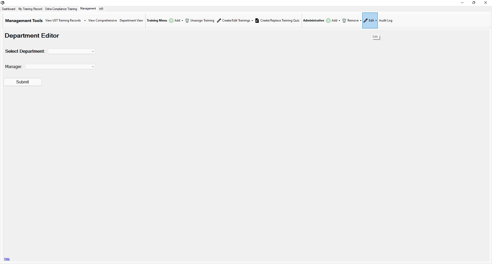

Return to Main Menu
Edit a Department
The Edit Department page can be accessed via the "Administrative" section of the "Management Tools" toolbar under the "Edit" dropdown.
Currently only the manager of a department can be changed through the uLearn application.

Instructions:
-
Navigate to the Edit Department page.
-
Select a department to edit.
-
Select a manager for the department.
-
Press the "Submit" button.